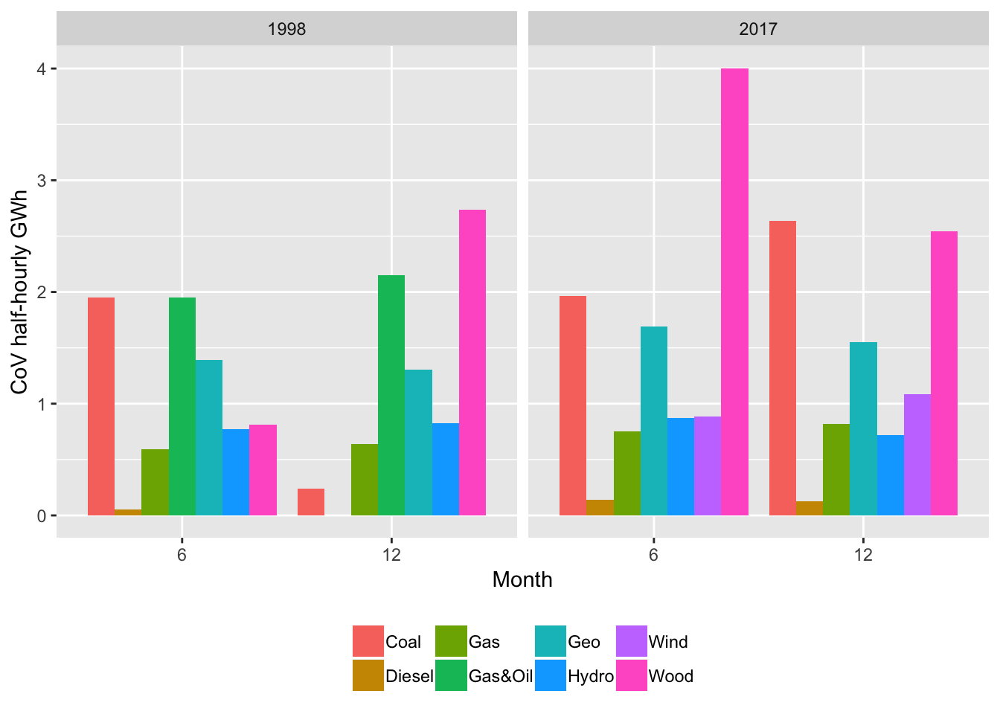

NZ Electricity Generation Trends 1998-2017
Ben Anderson (b.anderson@soton.ac.uk @dataknut)
Last run at: 2018-11-13 09:43:27
1 Citation
If you wish to use any of the material from this report please cite as:
- Anderson, B. (2018) NZ Electricity Generation Trends 1998-2017, .
This work is (c) 2018 the University of Southampton.
2 About
2.1 Circulation
Report circulation:
- Restricted to University of Otago.
2.2 Purpose
This report is intended to:
- load and test NZ electricity generation data from https://www.emi.ea.govt.nz/Wholesale/Datasets/Generation/Generation_MD/ from 1998 to 2017.
2.3 Requirements:
- pre-downloaded NZ wholesale generation datasets
2.5 Support
This work was supported by:
- The University of Otago;
- SPATIALEC - a Marie Skłodowska-Curie Global Fellowship based at the University of Otago’s Centre for Sustainability (2017-2019) & the University of Southampton’s Sustainable Energy Research Group (2019-2020).
We do not ‘support’ the code but if you notice a problem please check the issues on our repo and if it doesn’t already exist, please open a new one.
3 Introduction
Inspired by Steffel (2018) which analyses trends in the type and timing of generation in the UK over the same time period. Intended to build on Kahn et al’s 2018 CO2 intensity of peak demand paper - how have thngs changed over time?
Uses https://www.emi.ea.govt.nz/Wholesale/Datasets/Generation/Generation_MD/ from 1998 to 2017. Note that this does not appear to include Solar (too low or in a seperate data set?) nor does it appear to include domestic/small-scale generation? It is possible that these are to be found in https://www.emi.ea.govt.nz/Wholesale/Datasets/Metered_data/Embedded_generation and should be combined with this data?
Data is kWh - so energy not power.
4 Load data
Load the generation data from files stored in:
- /Volumes/hum-csafe/Research Projects/GREEN Grid/externalData/EA_Generation_Data/
These have been pre-downloaded and cleaned but could be pulled on the fly to be refreshed for other dates…
## Warning in `[.data.table`(filesToDateDT, , `:=`(c("year", "month",
## "stub"), : Supplied 3 columns to be assigned a list (length 5) of values (2
## unused)## [1] "Files loaded"## [1] "Loaded 352,250 rows of data"## sampleGenDT
##
## 14 Variables 352250 Observations
## ---------------------------------------------------------------------------
## Site_Code
## n missing distinct
## 352250 0 69
##
## lowest : ANI ARA ARG ARI ATI, highest: WPA WPI WRK WTK WWD
## ---------------------------------------------------------------------------
## POC_Code
## n missing distinct
## 352250 0 68
##
## lowest : ARA2201 ARG1101 ARI1101 ARI1102 ASB0661
## highest: WRK0331 WRK2201 WTK0111 WWD1102 WWD1103
## ---------------------------------------------------------------------------
## Nwk_Code
## n missing distinct
## 352250 0 27
##
## lowest : ALNT BOPD CHHE CTCT EASH, highest: TRPG TRUS TUAR WAIK WATA
## ---------------------------------------------------------------------------
## Gen_Code
## n missing distinct
## 352250 0 68
##
## lowest : aniwhenua arapuni aratiatia argyle_wairau atiamuri
## highest: whakamaru whareroa wheao_flaxy whirinaki white_hill
## ---------------------------------------------------------------------------
## Fuel_Code
## n missing distinct
## 352250 0 8
##
## Value Coal Diesel Gas Gas&Oil Geo Hydro Wind Wood
## Frequency 6100 6100 44300 6100 42700 213500 27350 6100
## Proportion 0.017 0.017 0.126 0.017 0.121 0.606 0.078 0.017
## ---------------------------------------------------------------------------
## Tech_Code
## n missing distinct
## 352250 0 5
##
## Value Cogen Geo Hydro Thrml Wind
## Frequency 27500 42700 213500 41200 27350
## Proportion 0.078 0.121 0.606 0.117 0.078
## ---------------------------------------------------------------------------
## Trading_date
## n missing distinct
## 352250 0 122
##
## lowest : 1998-06-01 1998-06-02 1998-06-03 1998-06-04 1998-06-05
## highest: 2017-12-27 2017-12-28 2017-12-29 2017-12-30 2017-12-31
## ---------------------------------------------------------------------------
## Time_Period
## n missing distinct
## 352250 0 50
##
## lowest : TP1 TP10 TP11 TP12 TP13, highest: TP50 TP6 TP7 TP8 TP9
## ---------------------------------------------------------------------------
## kWh
## n missing distinct Info Mean Gmd .05 .10
## 338160 14090 116836 0.997 37186 45162 0 0
## .25 .50 .75 .90 .95
## 6563 19715 48640 82910 150714
##
## lowest : 0.0000e+00 4.5000e-03 8.7000e-03 1.0000e-02 1.0200e-02
## highest: 4.9213e+05 4.9239e+05 4.9246e+05 4.9266e+05 4.9302e+05
## ---------------------------------------------------------------------------
## rTime [secs]
## n missing distinct
## 338160 14090 48
##
## lowest : 00:15:00 00:45:00 01:15:00 01:45:00 02:15:00
## highest: 21:45:00 22:15:00 22:45:00 23:15:00 23:45:00
## ---------------------------------------------------------------------------
## rDate
## n missing distinct
## 352250 0 122
##
## lowest : 1998-06-01 1998-06-02 1998-06-03 1998-06-04 1998-06-05
## highest: 2017-12-27 2017-12-28 2017-12-29 2017-12-30 2017-12-31
## ---------------------------------------------------------------------------
## rDateTime
## n missing distinct
## 338160 14090 5856
## Info Mean Gmd
## 1 2010-03-23 19:23:45 1979-03-18 16:00:26
## .05 .10 .25
## 1998-06-09 00:15:00 1998-06-17 00:15:00 1998-12-10 09:15:00
## .50 .75 .90
## 2017-06-11 15:45:00 2017-12-06 19:15:00 2017-12-21 22:15:00
## .95
## 2017-12-26 23:15:00
##
## Value 8.950e+08 9.000e+08 9.100e+08 9.150e+08 1.495e+09 1.500e+09
## Frequency 20548 42812 752 69184 47600 53200
## Proportion 0.061 0.127 0.002 0.205 0.141 0.157
##
## Value 1.510e+09 1.515e+09
## Frequency 16100 87964
## Proportion 0.048 0.260
## ---------------------------------------------------------------------------
## month
## n missing distinct Info Mean Gmd
## 352250 0 2 0.749 9.087 2.997
##
## Value 6 12
## Frequency 171000 181250
## Proportion 0.485 0.515
## ---------------------------------------------------------------------------
## year
## n missing distinct Info Mean Gmd
## 352250 0 2 0.716 2010 9.075
##
## Value 1998 2017
## Frequency 138850 213400
## Proportion 0.394 0.606
## ---------------------------------------------------------------------------Table ?? sumarises the data. Notice that there are missing (NA) values in the kWh column. These are caused by periods 49 and 50:
“The data is presented by trading period, TP1, TP2, … TP48. Trading period 1 starts at midnight, trading period 2 starts at 12:30am, trading period 3 starts at 1:00am, etc. Users of this data should be aware of daylight saving in New Zealand. On the day daylight saving commences there are only 46 trading periods and on the day it ends, there are 50.” (https://www.emi.ea.govt.nz/Wholesale/Datasets/Generation/Generation_MD/)
So on 2 days of the year TP47 & TP48 do not exist and on the following days they are back and we also have TP49 & TP50. There are only two things in life worse than death & taxes: daylight saving time and time-zones.
Daylight saving begins/ends in October and March so we carefully avoid this problem in this section by using June and December. However these TP are still present as labels in the Time_Period variable and so give NA kWh in the data as the following table (Table 4.1) and plot (Figure 4.1) of NA observations (only) by Fuel Type and month show.
| Time_Period | mean |
|---|---|
| TP1 | 32193.95 |
| TP10 | 28197.44 |
| TP11 | 29102.29 |
| TP12 | 30355.92 |
| TP13 | 32589.18 |
| TP14 | 35307.47 |
| TP15 | 38153.58 |
| TP16 | 40611.99 |
| TP17 | 41846.03 |
| TP18 | 42344.12 |
| TP19 | 42572.59 |
| TP2 | 31058.35 |
| TP20 | 42364.31 |
| TP21 | 41953.33 |
| TP22 | 41580.21 |
| TP23 | 41157.60 |
| TP24 | 40811.56 |
| TP25 | 40331.06 |
| TP26 | 39886.99 |
| TP27 | 39653.17 |
| TP28 | 39227.72 |
| TP29 | 38878.22 |
| TP3 | 30111.71 |
| TP30 | 38668.61 |
| TP31 | 38707.44 |
| TP32 | 39144.56 |
| TP33 | 39847.08 |
| TP34 | 41145.00 |
| TP35 | 42903.35 |
| TP36 | 44126.06 |
| TP37 | 43686.30 |
| TP38 | 43162.35 |
| TP39 | 42323.73 |
| TP4 | 29313.75 |
| TP40 | 41477.26 |
| TP41 | 40763.28 |
| TP42 | 40360.00 |
| TP43 | 39752.14 |
| TP44 | 38615.70 |
| TP45 | 36913.02 |
| TP46 | 35083.01 |
| TP47 | 34647.09 |
| TP48 | 33234.67 |
| TP49 | NA |
| TP5 | 28734.70 |
| TP50 | NA |
| TP6 | 28278.83 |
| TP7 | 28020.79 |
| TP8 | 27830.14 |
| TP9 | 27905.97 |
Figure 4.1: Plot showing presence of NA observations by time period and Fuel Type
In order to avoid future confusion and to save a lot of error checking we therefore remove NA kWh (i.e. TP49 & TP 50) from the dataset.
# N rows before:
nrow(sampleGenDT)## [1] 352250# N time periods before:
uniqueN(sampleGenDT$Time_Period)## [1] 50# remove NA
sampleGenDT <- sampleGenDT[!is.na(kWh)]
# N rows after
nrow(sampleGenDT)## [1] 338160# N time periods after:
uniqueN(sampleGenDT$Time_Period)## [1] 485 Analysis: 1998 & 2017 Comparison
5.1 Distribution tests
Table 5.1 shows summary statistics for each fuel source by year. Hydro contributes the majority of energy in each year but coal has the highest half-hourly mean in each year suggesting that is makes large contributions at specific times. Comparing the mean and median for coal shows how skewed this distirbution was in 1998 although far less so in 2017. This is also supported by the maximum values which show coal as the ‘peaked’ energy producer in 1998 although this has faded by 2017 where it shows similar maxima to gas and hydro. Note that 2 of the 4 the Huntly coal-fired units were mothballed/retired during this period.
Figure 5.1 shows the distribution of half-hourly observations by month and year. It clearly shows the use of coal in June 1998, non-use in December 1998 but re-use in December 2017 where there appears little differnece between winter & summer use for most fuels. We also see the emergence of wind by 2017.
| year | Fuel_Code | sumMWh | meanMWh | medianMWh | minMWh | maxMWh | sdMWh |
|---|---|---|---|---|---|---|---|
| 1998 | Coal | 379460.72 | 129.60 | 40.99 | 0 | 493.02 | 159.50 |
| 1998 | Diesel | 322.77 | 0.11 | 0.00 | 0 | 84.86 | 2.97 |
| 1998 | Gas | 537031.60 | 28.11 | 10.27 | 0 | 267.10 | 45.45 |
| 1998 | Gas&Oil | 514797.99 | 87.91 | 91.95 | 0 | 173.73 | 43.46 |
| 1998 | Geo | 340786.48 | 38.80 | 25.60 | 0 | 81.87 | 28.90 |
| 1998 | Hydro | 3870532.38 | 42.64 | 26.49 | 0 | 294.98 | 53.53 |
| 1998 | Wood | 29067.50 | 9.93 | 14.10 | 0 | 19.50 | 7.41 |
| 2017 | Coal | 426606.86 | 145.70 | 140.41 | 0 | 241.88 | 64.98 |
| 2017 | Diesel | 941.40 | 0.32 | 0.00 | 0 | 45.39 | 2.49 |
| 2017 | Gas | 1367101.27 | 58.36 | 22.78 | 0 | 290.87 | 75.67 |
| 2017 | Geo | 1222782.96 | 37.97 | 38.87 | 0 | 84.75 | 23.46 |
| 2017 | Hydro | 3586485.42 | 31.41 | 19.57 | 0 | 291.82 | 39.68 |
| 2017 | Wind | 255368.77 | 9.73 | 6.30 | 0 | 44.27 | 9.90 |
| 2017 | Wood | 43571.23 | 14.88 | 16.64 | 0 | 19.51 | 4.91 |
Figure 5.1: Box plot of energy produced by all fuels
Figure 5.2 visualises the distribution of MWh values within fuel sources. Note that the vertical axis has been allowed to vary by fuel source so that smaller counts are visible. The y axis is constant which enables the higher unit output of coal to be clearly visible. The histogram for coal shows the use of multiple units in June 1998 but not 2017 for example where the output is clearly truncated. It also shows that coal was almost constantly generating in 2017 (very few zero values). Hydro on the other hand shows a large number of zero or low values as does wind and back-up diesel which is to be expected.
Figure 5.2: Overall energy production histrograms by fuel type
5.2 Monthly generation
The following plots shows the total, mean, s.d. and coefficient of variation plots of half-hourly GWh produced by each fuel source each month and to some extent relfects the previous box plots.
The total is simply the sum of all half-hourly values and Figure 5.3 shows the dominance of hydro followed by coal in June 1998; the non-use of coal in December 1998; the growth of gas & geo by 2017 but the relative stasis in at-capacity hydro (?).
Figure 5.3: Monthly total plot by fuel type
Figure 5.4: Monthly mean plot by fuel type
Figure 5.5 shows the standard deviation of the half-hourly generation data and suggests that coal has the highest absolute variation in June 1998 which may correspond to a particular spike and/or a period of very heavy use. Coal is less variable in 2017 perhaps due to the increased use of Gas.
Figure 5.5: Monthly s.d. plot by fuel type
Finally, Figure ?? shows the coefficient of variation across the half-hourly values (mean/s.d). We take the CoV to indicate relative variability (i.e. relative volatility) in generation load between the different fuels and use it in preference to the standard deviation (shown above) which, as an absolute measure, is affected by the underlying magnitude of each fuel’s use. The plots suggest that Coal and Wood tend to see greatest relative variability although Gas & Oil in 1998 also stand out.
# coefficient of variation https://en.wikipedia.org/wiki/Coefficient_of_variation
plotDT <- plotDT[, cov := 1000000 * (meankWh/sdkWh)] # corrct for GW conversion in plot function (doh!)
makeMonthlyDodgedPlot(plotDT, "cov", "CoV half-hourly GWh") + geom_col(position = "dodge")## Warning: Removed 1 rows containing missing values (geom_col).
## Warning: Removed 1 rows containing missing values (geom_col).
5.3 Half hourly profiles by month
However the monthly plots do not tell us about the use of different generation sources by time of day which has clear implications for how peaks in demand have been met over time.
To do this, the following plots partially replicate one of those found in Staffel, 2018 for the UK to show how the different components of generation have changed over time.
Figure 5.6 shows the total half-hourly generation for each month summed over all days whilst Figure 5.7 shows the same data but as a point plot to more clearly show the absolute contribution of each fuel.
Note 1: the half-hours are plotted at mid-points (00:15, 00:45, 01:15 etc…)
Note 2: rTime (Time of Day) is originally imputed from the TP1-48 periods (and TP49 & TP50 on DST break days) and is therefore automatically set to the local NZ ‘civil’ time - so NZST or DST as appropriate. See ?setEAGenTimePeriod and the data processing script for more details.
Figure 5.6: Half-hourly profile plot by fuel type (sum)
Figure 5.7: Half-hourly profile plot by fuel type (sum)
Repeat for 2017 only
Figure 5.8: Half-hourly profile plot by fuel type (sum), 2017 only
Figures 5.9 and 5.10 repeat this analysis but shows the mean, again suggesting that the values for coal are skewed by some extremely large values in December 1998 and by high generation values when used in 2017.
Figure 5.9: Half-hourly profile plot by fuel type (mean)
Figure 5.10: Half-hourly profile plot by fuel type (mean)
5.4 Half hourly profiles by day of the month
The following plots show the profiles for each day of the month. Unfortunately due to the lack of wind generation in 1998 the colour scheme changes from 1998 to 2017.
To be fixed
Nevertheless the differences between the compositions of each half-hour can be seen.

Figure 5.11: Half-hourly profile plot by fuel type

Figure 5.11: Half-hourly profile plot by fuel type

Figure 5.11: Half-hourly profile plot by fuel type
Figure 5.11: Half-hourly profile plot by fuel type
Figure 5.11 shows the total as a point plot while Figure 5.12 shows the total as stacked column plots to show the proportion of energy generation produced by each fuel.

Figure 5.12: Half-hourly profile plot by fuel type

Figure 5.12: Half-hourly profile plot by fuel type
Figure 5.12: Half-hourly profile plot by fuel type
Figure 5.12: Half-hourly profile plot by fuel type
6 Analysis: Trends 1998 - 2017
Using full dataset for each day, month & year.
## [1] "Files loaded"## [1] "Loaded 23,046,850 rows of data"As above, in order to avoid future confusion and to save a lot of error checking we again remove NA kWh (i.e. TP49 & TP 50) from the dataset.
# N rows before:
nrow(allGenDT)## [1] 23046850# N time periods before:
uniqueN(allGenDT$Time_Period)## [1] 50# remove NA
allGenDT <- allGenDT[!is.na(kWh)]
# N rows after
nrow(allGenDT)## [1] 22121358# N time periods after:
uniqueN(allGenDT$Time_Period)## [1] 506.1 Trends over years
The hydro trends (and the consequences for Carbon-based generation) should be seen in the context of the Southern Oscilation’s effect on rainfall.

Southern Oscillation Index
“Although El Niño and La Niña (collectively known as El Niño-Southern Oscillation or ENSO) have an important influence on New Zealand’s climate, it accounts for less than 25 percent of the year-to year variance in seasonal rainfall and temperature at most locations. Nevertheless, its effects can be significant.” https://www.niwa.co.nz/climate/information-and-resources/elnino/elnino-impacts-on-newzealand
“La Niña events have different impacts on New Zealand’s climate. More north–easterly winds are characteristic, which tend to bring moist, rainy conditions to the north–east of the North Island, and reduced rainfall to the south and south–west of the South Island.
Therefore, some areas, such as central Otago and South Canterbury, can experience drought in both El Niño and La Niña. "
Figure (fig:monthlySOI) shows the monthly El Niño Southern Oscillation Index for 1986–2016 and shows at least four strong El Nino periods centred on 1987, 1993, 1997, 2005 and 2015.
## Parsed with column specification:
## cols(
## Month_year = col_character(),
## Southern_oscillation_index = col_double()
## )## Month_year Southern_oscillation_index
## 1: Jan-86 1.0
## 2: Feb-86 -1.0
## 3: Mar-86 0.5
## 4: Apr-86 0.3
## 5: May-86 -0.2
## 6: Jun-86 1.0
Figure 6.1: Monthly Southern Oscillation
Figure (fig:yearlySOI) confirms this overall pattern although the aggregation to calendar years (as opposed to climate years) masks some of the periods.

6.2 Yearly generation trends
Figure 6.2 shows the dominance of hydro and decrease in coal use.
Adding annotations with information from:
- https://www.niwa.co.nz/climate/summaries/seasonal
- https://en.wikipedia.org/wiki/Huntly_Power_Station
Figure 6.2: Yearly total plot by fuel type
If we consider the relationship between generation and the SOI at the yearly level, Figure (fig:yearlyGenSOI) suggests that Gas is fairly responsive to increasing SOI above 0 (La Nina years) and hydro is the inverse (with considerable variation/uncertainty) on an annual measure. Presumably this indicates the use of Gas for peaking generation when hydro is at capacity in drier years?
Figure 6.3: Yearly generation values by fuel vs yearly SOI
6.3 Monthly trends
This section uses monthly aggregates.
## Warning: Removed 7 rows containing missing values (geom_path).Figure 6.4: Yearly total plot by fuel type
## Saving 11 x 8 in image## Warning: Removed 7 rows containing missing values (geom_path).Figures 6.4 shows the same trends as previously but using monthly data to highlight seasonal patterns over time.
If we consider the relationship between generation and the SOI at the monthly level, Figure (fig:monthlyGenSOI) suggests there is a much less clear relationship although the fit lines are still in the same directions with increased use of gas as the SOI increases and the inverse for hydro.

Figure 6.5: Yearly generation values by fuel vs yearly SOI
6.4 Daily trends
Figures 6.6 and ?? show the same trends as previously but using daily data to highlight seasonal patterns over time. Annotations use information from:
- https://www.niwa.co.nz/climate/summaries/seasonal
- https://en.wikipedia.org/wiki/Huntly_Power_Station
## Warning: Removed 217 rows containing missing values (geom_path).Figure 6.6: Yearly total plot by fuel type
## Saving 11 x 8 in image## Warning: Removed 217 rows containing missing values (geom_path).7 Discussion
here
8 Conclusions
go here
8.1 Data issues
8.1.1 Huntly 1-4 Fuel source
Figure 8.1 shows the fuel use by each of the Huntly units over time. It appears to show that huntly_1_4 always burns coal although the units are able to also burn gas. It is not clear if this data is correct.
Figure 8.1: Huntly fuel sources
8.1.2 What to do about TP49 & TP50?
We hate timezones but we hate DST even more!
8.1.3 Solar & embedded generation
Should we be adding embedded generation from https://www.emi.ea.govt.nz/Wholesale/Datasets/Metered_data/Embedded_generation ? It seems to be PV which (currently) has a los installed capacity…
9 Runtime
Analysis completed in 511.58 seconds ( 8.53 minutes) using knitr in RStudio with R version 3.5.1 (2018-07-02) running on x86_64-apple-darwin15.6.0.
10 R environment
R packages used:
- base R - for the basics (R Core Team 2016)
- data.table - for fast (big) data handling (Dowle et al. 2015)
- lubridate - date manipulation (Grolemund and Wickham 2011)
- ggplot2 - for slick graphics (Wickham 2009)
- readr - for csv reading/writing (Wickham, Hester, and Francois 2016)
- Hmisc - for describe (Harrell Jr, Charles Dupont, and others. 2016)
- knitr - to create this document & neat tables (Xie 2016b)
- bookdown - for additional markdown (Xie 2016a)
- GREENGrid - for local NZ GREEN Grid project utilities
Session info:
## R version 3.5.1 (2018-07-02)
## Platform: x86_64-apple-darwin15.6.0 (64-bit)
## Running under: macOS High Sierra 10.13.6
##
## Matrix products: default
## BLAS: /Library/Frameworks/R.framework/Versions/3.5/Resources/lib/libRblas.0.dylib
## LAPACK: /Library/Frameworks/R.framework/Versions/3.5/Resources/lib/libRlapack.dylib
##
## locale:
## [1] en_NZ.UTF-8/en_NZ.UTF-8/en_NZ.UTF-8/C/en_NZ.UTF-8/en_NZ.UTF-8
##
## attached base packages:
## [1] stats graphics grDevices utils datasets methods base
##
## other attached packages:
## [1] knitr_1.20 Hmisc_4.1-1 Formula_1.2-3
## [4] survival_2.42-6 lattice_0.20-35 skimr_1.0.3
## [7] readr_1.1.1 ggplot2_3.1.0 dplyr_0.7.7
## [10] data.table_1.11.8 gridCarbon_0.1.0
##
## loaded via a namespace (and not attached):
## [1] tidyselect_0.2.5 xfun_0.4 reshape2_1.4.3
## [4] purrr_0.2.5 splines_3.5.1 colorspace_1.3-2
## [7] htmltools_0.3.6 yaml_2.2.0 base64enc_0.1-3
## [10] utf8_1.1.4 rlang_0.3.0.1 pillar_1.3.0
## [13] foreign_0.8-71 glue_1.3.0 withr_2.1.2
## [16] RColorBrewer_1.1-2 bindrcpp_0.2.2 bindr_0.1.1
## [19] plyr_1.8.4 stringr_1.3.1 munsell_0.5.0
## [22] gtable_0.2.0 htmlwidgets_1.3 evaluate_0.12
## [25] labeling_0.3 latticeExtra_0.6-28 fansi_0.4.0
## [28] highr_0.7 htmlTable_1.12 Rcpp_0.12.19
## [31] acepack_1.4.1 scales_1.0.0 backports_1.1.2
## [34] checkmate_1.8.5 gridExtra_2.3 hms_0.4.2
## [37] digest_0.6.18 stringi_1.2.4 bookdown_0.7
## [40] grid_3.5.1 rprojroot_1.3-2 cli_1.0.1
## [43] tools_3.5.1 magrittr_1.5 lazyeval_0.2.1
## [46] tibble_1.4.2 cluster_2.0.7-1 crayon_1.3.4
## [49] pkgconfig_2.0.2 Matrix_1.2-14 lubridate_1.7.4
## [52] rstudioapi_0.8 assertthat_0.2.0 rmarkdown_1.10
## [55] R6_2.3.0 rpart_4.1-13 nnet_7.3-12
## [58] compiler_3.5.1References
Dowle, M, A Srinivasan, T Short, S Lianoglou with contributions from R Saporta, and E Antonyan. 2015. Data.table: Extension of Data.frame. https://CRAN.R-project.org/package=data.table.
Grolemund, Garrett, and Hadley Wickham. 2011. “Dates and Times Made Easy with lubridate.” Journal of Statistical Software 40 (3): 1–25. http://www.jstatsoft.org/v40/i03/.
Harrell Jr, Frank E, with contributions from Charles Dupont, and many others. 2016. Hmisc: Harrell Miscellaneous. https://CRAN.R-project.org/package=Hmisc.
R Core Team. 2016. R: A Language and Environment for Statistical Computing. Vienna, Austria: R Foundation for Statistical Computing. https://www.R-project.org/.
Wickham, Hadley. 2009. Ggplot2: Elegant Graphics for Data Analysis. Springer-Verlag New York. http://ggplot2.org.
Wickham, Hadley, Jim Hester, and Romain Francois. 2016. Readr: Read Tabular Data. https://CRAN.R-project.org/package=readr.
Xie, Yihui. 2016a. Bookdown: Authoring Books and Technical Documents with R Markdown. Boca Raton, Florida: Chapman; Hall/CRC. https://github.com/rstudio/bookdown.
———. 2016b. Knitr: A General-Purpose Package for Dynamic Report Generation in R. https://CRAN.R-project.org/package=knitr.